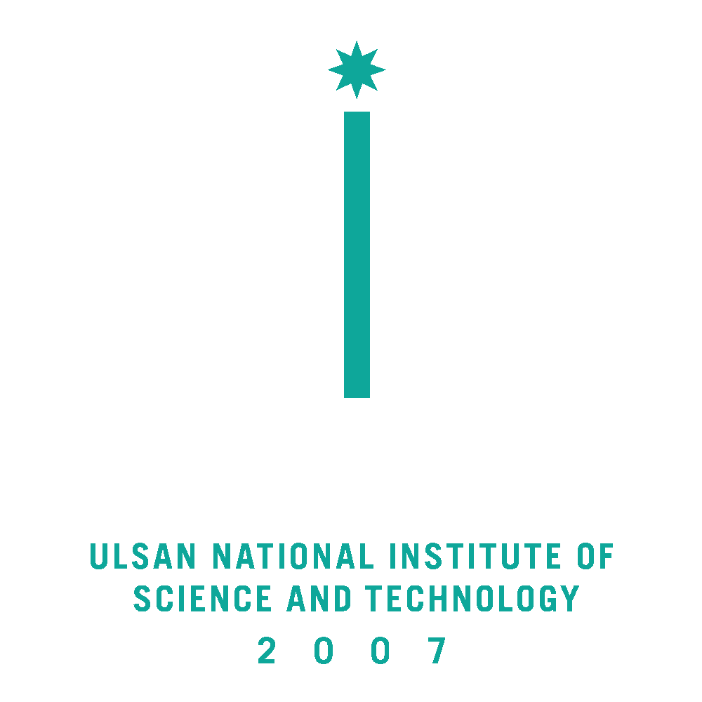
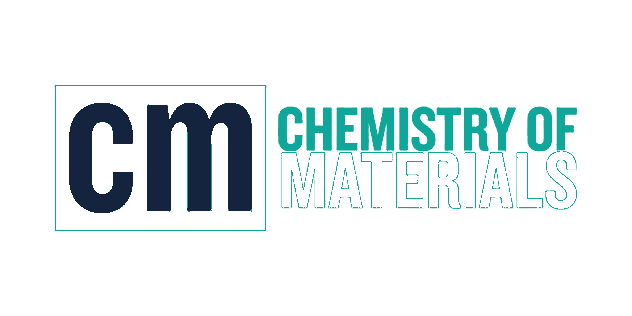

차세대 반도체 소재 공정을 위한 원자층증착 기술 개요


자기제한 표면 반응이 만드는 원자 단위 두께 제어
전구체 주입 — 표면 반응기와 화학 결합, 단분자층에서 자연 종결
1차 퍼지 — 미반응 전구체와 부산물 제거
반응물 주입 — 표면 리간드 교환으로 목표 조성 완성
2차 퍼지 — 사이클 종료, 두께는 사이클 수로 결정
250 °C 조건에서 300 mm 웨이퍼 전면 두께 편차 1.5% 이내를 확인했습니다. 고종횡비 구조에서도 단차 피복성이 유지됩니다.
측정 지점 49점, 반복 3회
분광 타원계 두께 분석
| PARAMETER | Al₂O₃ | HfO₂ | NOTE |
|---|---|---|---|
| 증착 온도 | 250 °C | 280 °C | ±2 °C |
| 전구체 | TMA | TEMAH | 실온 유지 |
| 반응물 | H₂O | O₃ | — |
| 사이클당 성장률 | 1.1 Å | 0.9 Å | 포화 조건 |
UNIST 반도체소재부품대학원 공정 클러스터
두께를 시간이 아니라 사이클 수로 정의하는 순간, 공정은 재현 가능해집니다.
질문과 공동연구 제안을 환영합니다.